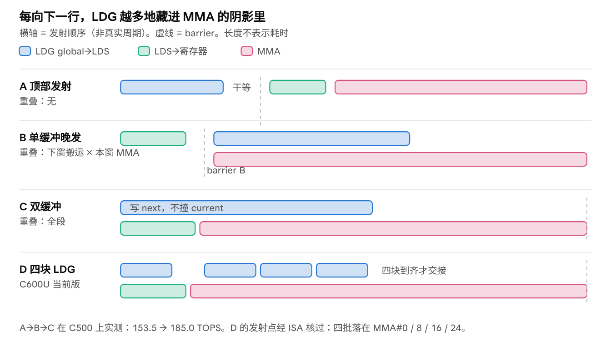

本文分析的是本项目 mma_swizzle_256_k128_db_ldg4.cu 这支 C600U（xcore1600）int8 GEMM kernel 的流水排布，并拿 C500 上实测过的四支前身做对照：mma_swizzle_256.cu（单缓冲）、mma_pipeline_256.cu（晚发射 / 双缓冲）、mma_dbuf_256.cu（切 K 换双缓冲）、mma_swizzle_c600.cu（K=32 移植）。
一句话结论：C600U 这一版把「搬运」从一次性大块拆成四块，塞进 128 条 MMA 的缝里，用 128 KiB LDS 换单 block 内的全程重叠 —— 这是 C500 上因为 64 KiB LDS 上限做不到的事。
| 来源 | 可信度 |
|---|---|
| C500 / MACA 3.3.0 / 104 CU 上的 TOPS 与微秒数 | 真机实测，多轮取最快并交换顺序排除时钟爬坡 |
| bank 冲突拍数 | host 侧确定性模型（banks 子命令），32 bank × 4 B 参考模型，不是 C600U 的实测周期 |
| C600U 的一切性能数字 | 运行数字仍没有，但机器码已在 C500 盒子上交叉编译出来逐条核过 |
凡本文出现 C600U 的性能判断，都是从结构推出来的预期，不是测出来的。
2026-11-19 在 C500 测试机（MACA 3.3.0，mxcc 1.0.0 / de3b0e5687）上做的。C500 跑不了 xcore1600 的二进制，但编译器支持这个 target，所以所有指令层结论都成立，只是没有周期数。
驱动层把 -S 挡住了（mxcc -S 报 unknown argument），但 mxcc -cc1 本身就是 clang，而 cc1 接受 -x ir —— 于是它就是个现成的 llc：
A=xcore1600 # C500 是 xcore1000
mxcc -x maca -O3 -std=c++17 --offload-arch=$A --maca-path=/opt/maca \
-fatbc src.cu -o o.bc
clang-offload-bundler --type=bc --unbundle --input=o.bc \
--targets=maca-mxc-metax-macahca--$A-bc --output=d.bc
llvm-dis d.bc -o d.ll
mxcc -cc1 -triple mxc-metax-macahca -target-cpu $A -S -O3 -x ir d.ll -o d.s出来的是真汇编，连 .macahca_kernel 资源描述段和 .MetaXGPU.csdata 里的占用率数字都在。注意两个地方要跟着换：bundler 的 --targets 和 cc1 的 -target-cpu。
对比之下，-mllvm -print-after=branch-relaxation 吐的是 MIR 伪指令（MMA_I32_16X16X32I8、ARRIVE 4096），读得出顺序和条数，但读不出 snop 的拍数、arrive 等的是哪个计数器、有没有 spill 指令、每 PEU 能住几个 warp。本文所有数字已经改成真汇编的。
本文里凡标注「ISA 实测」的数字都出自这两条命令，是指令计数和发射顺序，不是周期数。
LDG —— global → LDS 的搬运。C600U 版走 __builtin_mxc_ldg_b128_bsm：异步、直通 LDS、不过寄存器，发完就走，靠 arrive_gvmcnt(0) 回收。
LDS 读（取片段） —— LDS → 寄存器。每条是 16 B，占一个发射槽，是 C500 上那个 1.83× 的主角。
MMA —— __builtin_mxc_mma_16x16x32i8，一条吃 32 个 k。C500 的对应指令只吃 16 个 k。
段 / 窗口（segment） —— K 方向一次处理的宽度。C600U 版是 STAGE_K = 128，整个 K 被切成 K/128 段，每段一次 LDS 交接。
后面第 3、5 节各有一张图。约定一致：
横轴是发射顺序（不是真实周期数，本仓库没有周期级 trace），从左到右。
一条横带代表一类指令占着发射槽：LDG 带、LDS 读带、MMA 带。
竖直虚线是一次会合（barrier_inst），所有 wave 必须在此对齐。
带与带在横向有重叠，才叫流水起来了；一条带的右端顶着下一条带的左端，就是串行。
着色只区分种类，不表示耗时长短。
C600U 对本算子唯一的结构性差别是 MMA 的 K：__builtin_mxc_mma_16x16x32i8 一条吃 32 个 k，C500 的 16x16x16i8 只吃 16 个。这一条件事往下传导出了整个排布的差异。
数据走三段，global → LDS → 寄存器 → MMA。mma_swizzle_256_k128_db_ldg4.cu 的配置：
| 层 | 容量 / 形状 | 谁写它 | 谁读它 |
|---|---|---|---|
| block tile | 256(M) × 256(N) × 256(K) | — | — |
| LDS 一份缓冲 | A 32 KiB + B 32 KiB = 64 KiB（256 行 × 128 B） | 512 条线程的 LDG | 8 个 wave 的取片段读 |
| LDS 总占用 | 2 份 = 128 KiB | — | — |
| 片段寄存器 | af[8][2] + bf[4][2]，每个 16 B | LDS 读 | MMA |
| 累加器 | acc[8][4] × 4 个 int32 = 128 个 int32 / lane | MMA | 写回 |
关键对比：C500 的 LDS 上限是每 block 64 KiB，所以 TILE_K=256 的单个缓冲（2×128×256 = 64 KiB）正好顶满，双缓冲根本放不下。C600U 版用 128 KiB 是整个排布差异的前提；这条容量假设尚未在真机上核过，是上机第一件要查的事。
512 线程 = 8 个 wave（WAVE=64），按 2×4 排，每个 wave 算 128×64 的输出，即 MMA_M=8 × MMA_N=4 = 32 个 16×16 小块。每段 K128 每个 wave 发 8 × 4 × 2(c) × 2(w) = 128 条 MMA。
先看几何上的下界 —— 一个 wave 在一段 K128 里要算的体积是固定的，除一下就是条数，没有别的可能：
wave tile = 128(M) × 64(N)，K 方向一段 = 128
一条 MMA = 16(M) × 16(N) × 32(K)
(128/16) × (64/16) × (128/32) = 8 × 4 × 4 = 128所以 128 是分块参数定死的，和怎么写循环无关。源码里写成 8 × 4 × 2(c) × 2(w)，只是把最后那个 4 拆成了两层循环。
| 因子 | 宏 | 怎么算出来的 |
|---|---|---|
| 8 | MMA_M | WM/16，WM = TILE_M/WAVE_M = 256/2 = 128 |
| 4 | MMA_N | WN/16，WN = TILE_N/WAVE_N = 256/4 = 64 |
| 2（c） | KCHUNK | STAGE_K/16/4 = 128/64 = 2 |
| 2（w） | MMA_PER_LOAD | 4 / MMA_WORDS = 4/2 = 2 |
两个 2 不是一回事，它俩都在 K 轴上，但切的粒度不同：
c 切的是「第几个 64 字节的 k 块」。读片段的地址是 k_off = q*16 + c*64，q = lane/16 ∈ 0..3。一条 16 B 的 LDS 读 × 4 个 lane 组 = 64 B，所以一个 c 步覆盖 64 个 k；一段 128 个 k，于是 c ∈ {0,1}。
w 切的是「这 16 B 里的前半还是后半」。详见下一小节：一条 lds_b128 读回 4 个 int32，而 K=32 的操作数只要 2 个。
const i32x2 a = {af[m][2 * w], af[m][2 * w + 1]}; // w=0 取 [0,1]，w=1 取 [2,3]对账：每个 (c, w) 组合覆盖 32 个 k，2 × 2 × 32 = 128 = STAGE_K，不重不漏。源码里就是那条 static_assert：
static_assert(MMA_WORDS == 2 && KCHUNK * MMA_PER_LOAD * MMA_K == STAGE_K, ...);和 C500 对照就知道这个拆法为什么会变：C500 的 MX_MMA_K=16，每 lane 片段只有 4 B，同一条 16 B 读切成 4 份（MMA_PER_LOAD=4）；它的 TILE_K=256、wave tile 64×64，于是是 4 × 4 × 4(c) × 4(w) = 256 条。
汇编里能直接看见 MMA_N=4 那层：本节末尾那段真汇编里，一个 A 片段 r188 连喂四条 MMA，B 换四个。这也是 MMA_M=8 比 MMA_N=4 大更划算的直接证据 —— A 片段被复用的次数是 MMA_N。
同样范围在 C500 上要 256 条 —— 这就是 「一条 K=32 顶两条 K=16」的直接后果，也是整篇文章最要紧的一句话：
MMA 指令数砍半，LDS 读和搬运一条没少。 非 MMA 指令在发射槽里的占比翻倍地刺眼，消 bank 冲突、藏搬运延迟这两件事在 C600U 上比在 C500 上更值钱，而不是更不值。
一条 MMA 要 16 行 × K 个 int8 = 16K 字节，64 条 lane 分，每 lane 拿 K/4 字节。于是：
C500（K=16）：片段 4 B，一条 16 B 读切出 4 个片段 → 喂 4 条 MMA。
C600U（K=32）：片段 8 B，同一条 16 B 读切出 2 个片段 → 喂 2 条 MMA。
地址、步长、bank 行为完全相同，只是把这 16 字节切成 2 份而不是 4 份。代码里就是 {af[m][2*w], af[m][2*w+1]} 这一句配对。这也是为什么 XOR swizzle 从 C500 搬过来一个字都不用改，mask 还是 7。
K=32 的片段布局文档本项目没有。但硬件只保证一件事：a 的第 i 个字节槽和 b 的第 i 个字节槽配到同一个 k。它认为那是第几个 k，我们不关心。只要三件事成立，结果就是对的：
同一条 lane 给 A 和给 B 的 8 个字节取自同一组逻辑 k（代码对称，成立）；
4 个 lane 组的 32 个 k 互不相同（q*8 错开，成立）；
8 条指令 (c, w) 的 k 集合两两不交、并起来是整个窗口。
所以不必等拿到 K=32 的片段布局文档才能写这个 kernel —— 这是「k 的置换不影响结果」那条结论的直接复用。累加器布局因为输出块仍是 16×16，极可能与 K=16 逐字相同（m0=(lane>>4)*4, n=lane&15），不同的话正确性检查会立刻 FAIL。
机器码里的 MMA 长这样：
lds_b128 r174, r178, 0x8000 ; B 半，+32 KiB = STAGE_A_BYTES
lds_b128 r170, r178, 0x8800 ; +0x800 = 2048 = 16 行 × 128 B
lds_b128 r182, r178, 0x9000
lds_b128 r178, r178, 0x9800
arrive bsmcnt(3)
mma_i32_16x16x32i8 r166, r188, r174, r166 ; rD, A, B, rC
arrive bsmcnt(2)
mma_i32_16x16x32i8 r162, r188, r170, r162
arrive bsmcnt(1)
mma_i32_16x16x32i8 r158, r188, r182, r158
arrive bsmcnt(0)
mma_i32_16x16x32i8 r154, r188, r178, r154这十二行把很多事一次性说清楚了：
rD 和 rC 是同一个寄存器（r166 ← …, r166）—— 原地累加，零拷贝。
一个 A 片段喂四个 B 片段（r188 连用四次）—— 就是 MMA_N=4 那层循环。
LDS 偏移直接印证了布局：0x8000 = 32 KiB 是 B 半的起点，步长 0x800 = 2048 = 16 行 × 128 B。
arrive bsmcnt(N) 从 3 倒数到 0，每条 MMA 前一条。这是编译器在指令粒度上做的软件流水：第一条 MMA 只等到「还剩 3 条读没回来」就开算，不等四条读全落地。
操作数宽度汇编文本里看不出来，要看 MIR：两个输入是 mtreg_64bits（= 8 B / lane，印证「片段 = K/4 字节」），累加器是 mtreg_128bits（四个 int32）。
整支 kernel 的资源占用（ISA 实测，ELF .note）：
| 指标 | 值 | 怎么读 |
|---|---|---|
NumMTRegsForWarps/PEU | 196 | 向量寄存器；累加器 128 个就占了大半 |
NumSTRegsForWarps/PEU | 20 | 标量寄存器，很少 |
MaxWarpsPerPEU | 2 | 这是关键数字，见下 |
.private_memory_size | 0 | 没有 spill |
codeLenInByte | 9448 | 整支 kernel 的机器码长度 |
MaxWarpsPerPEU = 2 是这次汇编最重要的一个收获。本项目 README 第 7 节的原话是「并发 wave 数在本项目里是解释一切性能差异的关键变量」，而它编译期就写在汇编里，不用上机。C500 上跑得最好的那支是 3，这支是 2。第 7 节有完整对比表。
196 这个数字有意思：累加器 acc[8][4] 就是 128 个 int32，片段 af[8][2] + bf[4][2] 若全部同时活着还要 96 个，加起来 224 > 196。所以编译器没有把片段一次性读完，而是边读边算 —— 这一点在第 4 节会被发射顺序直接证实。
这一节是全文的主线。四种排布是逐步演化出来的，每一步都是上一步某个具体缺陷的回应。

从上到下，LDG 这条带越来越多地跑在 MMA 带的下方 —— 那就是「搬运被藏起来了」的全部含义。
发异步读 -> arrive_gvmcnt(0) -> barrier -> 读 LDS -> 256 条 MMA
^^^^^^^^^^^^^^^^ 发出去和等回来之间什么都没有这是 mma_swizzle_256.cu 的形状。异步搬运 builtin 用了，但发出去下一句就是 arrive_gvmcnt(0)，中间没有可重叠的对象 —— 实测异步单独只值 1.1%（4096³：同步 152.0 → 异步 153.8 TOPS）。异步是个机制，不是个优化；没有填进缝里的活，它就不值钱。
关键观察：LDS 那块地在读进寄存器之后就没人要了。所以把发射点挪到「LDS → 寄存器读完 + 一个 barrier」之后，MMA 全在寄存器上跑，和下一窗的搬运重叠。
代价是必须插那个 barrier B，确认所有人都读完了才能覆盖。额外 LDS 开销为零，实测值 1.20×（TK=256：153.5 → 185.0 TOPS）。这是本项目性价比最高的一步。
双缓冲写的是另一块地，所以读之前就能发，每窗还能少一个 barrier。在 C500 上这条路撞了墙：TILE_K=256 的一份缓冲就 64 KiB，双缓冲必须先把 TILE_K 砍到 128，结果每 CU 驻留 block 数从 2 掉回 1。
这就是本项目最贵的一条教训：
在 C500 上占用率比流水线值钱得多。 用「块内重叠」换掉「跨 block 重叠」是个坏交易 —— 后者是硬件白送的。
C600U 的 128 KiB LDS 恰恰是这堵墙被推开的地方：一份缓冲 64 KiB，两份 128 KiB，不用以驻留度为代价。但这条容量假设未经真机验证；若 C600U 的每 block LDS 上限仍是 64 KiB，整个排布 C/D 都要重做。
即使双缓冲把发射点提到了段首，还有个问题：八条 GVM 挤在段首一起发，它们互相排队，而且编译器很容易把后续批次沉到段尾。
mma_swizzle_256_k128_db_ldg4.cu 的做法：把一段的 64 KiB 按行分成四块（每块 64 行 × 128 B = 8 KiB，A、B 各一块），段首只发第一块，剩下三块穿插进当前段的 128 条 MMA 里。四块到齐才交接 LDS。
控制这件事的是两个开关：
| 宏 | 默认 | 作用 |
|---|---|---|
LDG4_INTERVAL | 1 | 源码每 8 条 MMA 安排一批预取；0 = 四块集中在段首发 |
LDG4_LDS_M_GROUP | 1 | 每批 A 读包含几个 16 行子块；0 = 整段预读对照 |
注意代码注释里的这句：「实际发射点由编译器决定」。源码把 prefetch_round 夹在 LDS 读之间是一个暗示，不是保证。compute_k128_grouped 相比 compute_k128_eager 的全部意义就在这里：后者把 af[8][2]、bf[4][2] 一次性全读完再算，前者按 MGroup 分批读，把 LDG 放在真实的 LDS 读之间，让调度器更难把它们沉底。
把最终机器码里主循环那个基本块（bb.5.for.body31，正好 128 条 MMA = 一段 K128）按发射顺序扫一遍，每条 LDG 记下它前面已经发了多少条 MMA：
| 配置 | 八条 ldg_b128 … bsm 的发射点（mma#） | 结论 |
|---|---|---|
LDG4_INTERVAL=1（默认） | 0, 0, 8, 8, 16, 16, 24, 24 | 源码意图完全兼现 |
LDG4_INTERVAL=0 | 八条全在 0 | 按设计挤在段首 |
LDG4_INTERVAL=4 | 0, 0, 24, 24, 56, 56, 80, 80 | 摊到全段 |
LDG4_LDS_M_GROUP=0（eager） | 0, 0, 128 × 6 | 六条掉到了最后一条 MMA 之后 |
最后一行是这次汇编最有价值的收获，而且比预期更耐人寻味。compute_k128_eager 把 af[8][2]、bf[4][2] 一次性全读完再算，于是八条预取里的六条被沉到 mma#128 —— 也就是最后一条 MMA 发完之后，紧跟着就是 arrive gvmcnt(0) 和 barrier。重叠不是减少，是完全没有。源码注释里那句「避免编译器将所有后续批次沉到段尾」不是杞人忧天，是字面意义上真实发生过的事。
分批读是护栏，不是装饰。 它付的代价也在汇编里：eager 版寄存器从 196 涨到 206，反而更贵。
每段真的只有一个 barrier。主循环块里 barrier 只出现 1 次，位置在 mma#128。对照：C500 的单缓冲版和 mma_swizzle_c600 的主循环里都是 2 个。
前奏段确实是裸露的。%bb.0 里 8 条 LDG 一次性发完，紧跟 arrive gvmcnt(0) + barrier，中间一条 MMA 都没有。
谓词版不改变调度，但贵一点。LDG4_PREDICATED=1 每条 LDG 多一个 pred_reg:s16 字段，发射点一样，但主循环指令从 250 涨到 256、snop 停顿从 4 拍涨到 8 拍。
异步搬运每条要额外三条标量指令。rfl_b32 s, r（只取第一条 lane 的地址）+ smov_b32 md, s（塞进 md 寄存器）+ sadd_co_u32 md, 0x8000, md（A 半跳到 B 半）。落点是通过 md 这个特殊寄存器传的，而它只认一个标量值 —— 这就是「LDS 落点必须按线程号连续」这条约束在硬件层的来源。
搬运排布决定「什么时候有数」，这一节决定「有了数之后每拍能喂进去多少」。C500 上实测过的最大单项收益就在这里。
按 32 bank × 4 B 的参考模型，一拍吐得出 128 B。C600U 版的 STAGE_K = 128，行距恰好是一拍 —— 每一行都从 bank 0 开始。
取片段时 16 条 lane 读 16 个不同的行，行内偏移却相同（同一个 q），于是 64 条 lane 只用到 16 个 bank，每 bank 深度 16 dword。模型下这条读要 16 拍，下限是 8 拍。
C500 上这件事被实测量过：4096³ 从 83.1 → 151.7 TOPS，1.83×。反推起来，那些 LDS 读原本吃掉了约九成时间 —— 那个 kernel 之前是 LDS 读受限，不是算力受限。
一行 128 B = 8 个 16 B 块。让逻辑第 j 块住到第 j ^ (r & 7) 个槽位，相邻 8 行被错开到 8 个槽位，32 个 bank 全用上，深度降到下限 8。
但这里有个真实的工程约束：BSM 异步搬运的 LDS 落点必须按线程号连续（代码里就是 buffer + tid * CHUNK）。落点不归我们挑，「把第 j 块写到槽位 j^u」做不到。
解法是：异或是对合的（a^b^b == a），所以下面两句话描述的是同一个布局：
把逻辑第 j 块放到槽位 j ^ u —— 改落点，异步搬运做不到；
让槽位 s 去取逻辑第 s ^ u 块 —— 改源地址，照样能做。
于是异或被提到了全局侧的列号上（SRC_CHUNK），LDS 落点保持连续，读侧一个字都不用改。代价：全局侧那 8 条 lane 取的还是那 128 个连续字节，只是换了个人取 —— 地址集合没变，合并访问足迹也没变。
代码里就是这两行宏：
#define SWZ(r, k) ((r)*STAGE_K + ((((k)>>4) ^ ((r)&7)) << 4) + ((k)&15))
#define SRC_CHUNK(SW, r, s) ((SW) ? ((s) ^ ((r) & SWZ_MASK)) : (s))mma_swizzle_256 | mma_pipeline_256 | mma_dbuf_256 | ..._k128_db_ldg4 | |
|---|---|---|---|---|
| 目标芯片 | C500 | C500 | C500 | C600U |
| MMA K | 16 | 16 | 16 | 32 |
| LDS 行距 | 256 B | 256 / 128 B | 128 / 64 B | 128 B |
| 一条 16 B 读喂几条 MMA | 4 | 4 | 4 | 2 |
| 片段寄存器 | af[4][4] bf[4][4] | af[4][KCH] | 同左 | af[8][2] bf[4][2] |
| 读的时机 | 整段一次读完 | 整段一次读完 | 整段一次读完 | 按 MGroup 分批 |
| 寄存器双缓冲 | 无 | 无 | 无 | 无 |
最后一行值得单独说：这几支 kernel 都没做寄存器级双缓冲（不存在「算 af[0] 的同时读 af[1]」这层流水）。compute_k128_grouped 的分批读是最接近的东西，但它的动机是「给 LDG 腾插缝的地方」，不是「藏 LDS 读延迟」。
汇编读下来要给这段补一句：源码没做的事，编译器替你做了一半。 在 ..._k128_db_ldg4 的主循环里，24 条 LDS 读并没有挤在开头，而是散在 MMA#0 (×5)、8、16、24 (×2)、36、40、52、64 (×5)、72 (×2)、80、92、96、108、112 这些位置上 —— 读就贴在用它的 MMA 前面。这是寄存器预算逼出来的（196 < 224，第 2 节），不是源码写出来的。两个 5 条聚在一起的点（0 和 64）正对应 KCHUNK=2 的两个 k 组起头。
K=32 把 MMA 条数砍半，LDS 读条数一条没少。每段每 wave：
LDS 读：(8 + 4) × 2 = 24 条
MMA：8 × 4 × 2 × 2 = 128 条
比值 1 : 5.33。C500 的 mma_swizzle_256.cu 同样算法、更小的 4×4 wave tile，每窗是 32 条读对 256 条 MMA，比值 1 : 8.0。两个数字都经 ISA 实测逐条数过。
这是这次汇编最能说明问题的一张表。数的是主循环那一个基本块里的机器指令条数：
| kernel | MMA K | 主循环总指令 | MMA | 占比 | LDS 读 | LDG | STS | snop 停顿 | barrier |
|---|---|---|---|---|---|---|---|---|---|
mma_swizzle_256 C500 XOR+同步 | 16 | 453 | 256 | 56.5% | 32 | 16 | 16 | 8 拍 | 2 |
mma_swizzle_256 C500 XOR+异步 | 16 | 460 | 256 | 55.7% | 32 | 16 | 0 | 24 拍 | 2 |
mma_swizzle_c600 K=32 直接移植 | 32 | 388 | 128 | 33.0% | 32 | 16 | 0 | 34 拍 | 2 |
..._k128_db_ldg4 C600U 当前版 | 32 | 250 | 128 | 51.2% | 24 | 8 | 0 | 4 拍 | 1 |
（表里只放主循环是单一基本块的配置。晚发射和双缓冲把循环拆成了多个块，按块算占比会虚高 —— 比如 mma_pipe<128, LATE> 的 MMA 块是 92.1%，但 LDS 读被挪到了另一个块里。）
第三行是警告，第四行是答案。
把 C500 的布局原样搬到 K=32 上（mma_swizzle_c600），MMA 条数砍半而 LDS 读、搬运、地址计算一条没少，MMA 在发射槽里的占比从 57% 直接掉到 33%。这就是「非 MMA 指令占比翻倍地刺眼」的定量版本。
..._k128_db_ldg4 把它括回到 51.2%，靠的不是流水线，是把 wave tile 从 4×4 改成 8×4：A 片段翻倍、B 片段不变，所以 LDS 读从 32 降到 24 而 MMA 数不变，每条读喂的 MMA 从 4 条涨到 5.33 条。同时 snop 停顿从 34 拍掉到 4 拍，barrier 从 2 个减到 1 个。
结论：C600U 上真正值钱的不是「做更深的流水」，是「让每条 LDS 读喂更多 MMA」。 K 翻倍之后，wave tile 的形状比流水级数更重要。
流水的正确性全靠这两个原语的位置。弄错一个，算出来的是错数字而不是报错。
| 原语 | 管什么 | 作用范围 |
|---|---|---|
__builtin_mxc_arrive_gvmcnt(0) | 「我自己发的异步搬运都落地了」 | 单条线程 |
__builtin_mxc_barrier_inst() | 「所有线程都走到这了」 | 整个 block |
两者必须成对出现，而且顺序固定：先 arrive 后 barrier。单独一个 barrier 只能保证「大家都把指令发出去了」，不保证「数据到了」—— 异步搬运发完就返回，这正是它快的原因，也正是它危险的原因。
这是双缓冲除了「发得更早」之外的第二项收益，容易被忽略。
单缓冲晚发射（MODE_LATE）每窗两个：
barrier A — 搬运对所有人可见，可以开读了
LDS 读
barrier B — 确认所有人读完了，可以覆盖这块地了
LDG（发下一窗，覆盖同一块）
MMA双缓冲每段只要一个，因为写的是另一块地，根本不存在「等所有人读完」这件事。C600U 版的那一句注释把这个交接点说得很准：
一个交接同时保证下一段全部生产者就绪、本段全部消费者结束 LDS 使用。
一条 barrier 同时关了两扇门：生产者那边（next 写满了）和消费者这边（current 读完了）。交换 current/next 指针就是所有权的交接。
这是改这个 kernel 时最该问的一个问题。答案：不存在「等这个块被读完」的逐块握手，安全性是三层叠出来的，而最后一层没写在源码里。
第一层：同一段之内，根本不会撞。 读 current，写 next，两块地。本段的四批 LDG 和本段的 24 条 LDS 读之间没有任何依赖 —— 这才是它们能随便散在 mma#0 / 8 / 16 / 24 的原因。不是调度器「恰好安全」，是它们压根不相干。
第二层：真正的风险是跨段的。 指针交换之后，本段要写的 next 正是上一段大家在读的 current。挡它的是上一段末尾那个 barrier，而 barrier 是整个 block 的（512 线程 / 8 个 wave）—— 「它所依赖的所有 wave」和 barrier 的覆盖面正好重合，不多不少。
不变式可以写成一句话：LDS 的某一半在任意时刻要么全是读者、要么全是写者，切换点只有 barrier 一处。 这也是为什么循环从 segment = 1 开始：段首那条 prefetch_round(window, 0) 的安全性是上一段的 barrier 给的，不是本段任何东西给的，所以第 0 段必须在循环外单独配一对 arrive + barrier。
第三层：「读完」到底算到哪一步 —— 这层是隐式的。 barrier 只保证所有线程到达了，不保证谁未完成的 LDS 读已经回来。真正保证这件事的是另一条链：每一条 lds_b128 的结果都被本段的某条 MMA 吃掉，而编译器在每条消费它的 MMA 前面插了 arrive bsmcnt(N)，倒数到 0（具体形态见第 2 节那段汇编）。
汇编里最后一条 arrive bsmcnt(0) 落在 mma#116，后面还有 12 条 MMA 才走到 arrive gvmcnt(0) 和 barrier。所以一个 wave 走到 barrier 时，它那 24 条读确实已经全部落袋。
但这条保证源码里一个字都没写。 它是「每条 LDS 读都在本段被消费」这件事的副产品。
因为：__builtin_mxc_barrier_inst() 是一条裸 barrier（汇编里就是 barrier），不自带 bsmcnt 排空；__syncthreads() 才会展开成 arrive bsmcnt(0) + barrier + arrive bsmcnt(0)。
所以：如果有人加一条 LDS 读、而它的消费者在 barrier 之后（比如预读下一段的片段做寄存器双缓冲），这个保证会静默失效 —— 编译器没有理由替你在 barrier 前排空 bsmcnt。这是本 kernel 一个真实的、没写在注释里的脆弱点。要动这块，就把那一处换成 __syncthreads()，或者自己补一条 arrive bsmcnt(0)。
gemm_kernal_v6.3.cu 已经这么做了上面那个粒度——整个 64 KiB 缓冲段尾一次交接——在依赖关系上确实是过度同步。本仓库里的 gemm_kernal_v6.3.cu 把它细化到了 8 KiB 窗口，而且窗口尺寸是推出来的不是拍脑袋的：
kLdgSize = sizeof(LdgType) × kThreadNum = 16 B × 512 = 8192 B
bsm_ldg_stride = kLdgSizePerWave × kWaveNum = 1024 × 8 = 8192 BA 半 64 KiB = 8 个窗口，B 半同理，16 个窗口在 128 KiB 里独立周转。
它的一轮是三拍：
arrive_bsmcnt(0); // ① 我自己对这块的 LDS 读已经回来了
MMA ...
arch::maca_barrier(); // ② 所有 wave 都读完了（源码注释：A0 B0 bsm release）
MMA ...
LDG_BSM_A_TILE_STAGE(1, tilek, 0); // ③ 立刻往刚释放的窗口写下一块它没用任何新原语。 还是全 block 的 maca_barrier()，只是数量更多、位置更准（每个 128-k tile 两条，每条卡在「这批窗口刚好被消费完」那条 MMA 上），并且 「读完」是显式写出来的 —— arrive_bsmcnt(0) 就在 barrier 前面，不像我们那支靠「每条 lds 都被 MMA 消费」的副作用。
顺带一个闭环：arrive_bsmcnt(count) 定义成 __builtin_mxc_arrive(4096 + 128*count) —— 正是我们从 MIR 里解出的那串 ARRIVE 4096 / 4224 / 4352 / 4480。我们那支是编译器自动插的，v6.3 是手写的。
..._k128_db_ldg4 | gemm_kernal_v6.3 | |
|---|---|---|
| LDS 总量 | 128 KiB | 128 KiB |
| 回收单位 | 整个 64 KiB 缓冲 | 8 KiB 窗口 × 16 |
| barrier / 128-k | 1 | 2 |
| LDG 发射点 | mma#0 / 8 / 16 / 24（挤在前 24 条） | mma#4 / 20 / … / 116（匀布全段） |
| 「读完」的保证 | 隐式 | 显式 arrive_bsmcnt(0/2) |
| 等全局搬运 | arrive_gvmcnt(0) 排空到 0 | cp_async_wait<3/3/5/3> 保留 3‥5 条在飞 |
| wave 排布 | 2×4，wave tile 128×64 | 4×2，wave tile 64×128 |
前面那句「按行切块和尽早回收是对着干的」说过头了。 v6.3 绕过去的办法很简单：把 k 的两半贴在一起读（LDS_A_MK(0,m,0) 紧跟 LDS_A_MK(0,m,1)），一个行组一次用完，窗口当场释放。这是循环次序问题，不是硬件约束。
它的代价：那些等待计数是手工配平的。 源码自己写着 // Waits retain 3,3,5,3 copies at the existing shared-memory barriers。多插一条 LDG 或挪一条 LDS 读，这些数就静默失真 —— 靠数数保证正确，不是靠结构保证正确。加上 513 条 MMA 宏、16 条 barrier 全部手工展开，改动成本很高。
尚未验证：以上全部是读源码得来的。v6.3 的汇编还没扳过 —— 它的
MaxWarpsPerPEU是多少、那 16 条 barrier 的实际落点、cp_async_wait<N>是不是如期编成arrive gvmcnt(N)，都得上机才能定。
mma_swizzle_256_k128_db_ldg4.cu 的主循环展开就是一句话：
for (segment = 1; segment < segments; ++segment) {
window = make_window(..., next, segment, ...);
prefetch_round(window, 0); // 段首发第一块
compute_k128<SW, true>(current, ..., window); // 剩下三块穿插在里面
arrive_gvmcnt(0); // 我发的四块都落地
barrier_inst(); // 大家都到这儿了
swap(current, next); // 所有权交接
}
compute_k128<SW, false>(current, ...); // 最后一段：不预取、不会合三个细节值得注意：
循环从 segment = 1 开始。第 0 段在循环外发满四块，后跟一对 arrive + barrier —— 这是整个 kernel 唯一一段没有东西可掉的搬运延迟，账上认了。
最后一段跑的是 LoadNext = false 的实例。模板参数把预取代码整个编掉，也不再会合。不这么写就会多发一次越界预取。
LDG4_PREDICATED = 0 是默认值。无谓词的 ldg_b128_bsm 便宜，代价是入口要求 M/N/K 都是 256 的倍数并覆盖完整 tile。不满足就得打开谓词版，多一份开销。
| 坑 | 症状 | 原因 |
|---|---|---|
忘了 arrive，只写 barrier | 数字间歇性错，小尺寸可能 PASS | barrier 不等异步搬运落地 |
| 单缓冲漏了 barrier B | 快的 wave 覆盖了慢的 wave 还在读的数据 | 读写同一块 LDS |
| 双缓冲多加了一个 barrier | 正确，但白丢一半收益 | 把双缓冲退化成了单缓冲的同步开销 |
最后一段仍走 LoadNext = true | 越界读，或多一次白白等待 | 循环边界没特处理 |
| 加一条消费者在 barrier 之后的 LDS 读 | 静默读到被覆盖的数据 | 裸 barrier 不排空 bsmcnt，见上一小节第三层 |
最后一条提醒：mma_pipeline_256.cu 实测发现 TK=128 单缓冲晚发射这个组合跨进程不稳（426.7‥514.7 μs，极差 20.6%，7 次采样），其余组合 < 2.2%。成因未定位。C600U 上做对照测试时，单次采样的数字不足以定谁赢。
主循环那 252 条指令里，和同步、等待相关的占了这些：
| 指令 | 条数 | 来源 |
|---|---|---|
arrive bsmcnt(N) | 22 | 编译器插的，等 LDS 读落地 |
arrive gvmcnt(0) | 1 | 我们写的那一条，等全局搬运 |
snop | 11 条 / 4 拍 | 硬件冒险空拍（snop 0 不占拍） |
barrier | 1 | 我们写的那一个 |
两个计数器分工很清楚：gvmcnt 管全局内存搬运（我们的 arrive_gvmcnt(0)，汇编里就是 arrive gvmcnt(0)），bsmcnt 管 LDS 访问。那 22 条 bsmcnt 全是 metaxgpu-insert-arrivecnts 自动插的，防的是 LDS 读到 MMA 的数据冒险。
而且它们插得很巧：第 2 节那段汇编里是 bsmcnt(3) → mma → bsmcnt(2) → mma → bsmcnt(1) → mma → bsmcnt(0) → mma。第一条 MMA 只等到「还剩 3 条读没回来」就开算，不是等四条读全落地。 这是编译器在指令粒度上替你做的软件流水。
意思是：你写了 1 条同步指令，编译器在你看不见的地方又插了 22 条。调 LDS 读的位置，其实就是调这 22 条的位置。
意思是：你写了 1 条同步指令，编译器在你看不见的地方又插了 22 条。调 LDS 读的位置，其实就是调这 22 条的位置。
这是本文里最干净的一条对照：
拿 C500 的 mma_swizzle_256.cu 同一份源码的两个模板实例对着看，主循环块：
ldg_b128 形态 | sts_b128（写 LDS） | 总指令 | snop 停顿 | |
|---|---|---|---|---|
同步拷贝 <XOR, false> | ldg_b128 rDst, rAddr, 0x0 | 16 | 453 | 8 拍 |
BSM 异步 <XOR, true> | ldg_b128 r0, rAddr, 0x0 ret0_en bsm | 0 | 460 | 24 拍 |
同步版是「读到寄存器再写回 LDS」，所以每条 LDG 配一条 STS。异步版的 LDG_B128 目的地直接就是 LDS —— 机器码里写作 (volatile load (s128) from %ir.add.ptr15.i, **addrspace 3**)。同一个助记符，地址空间不同。
但汇编还翻出了一件反直觉的事：异步版的指令更多（460 > 453），停顿也更多（24 拍 > 8 拍）。 原因是每条 BSM 搬运都要额外三条标量指令把落点塞进 md：
rfl_b32 s5, r41 ; 只取第一条 lane 的地址
smov_b32 md, s5 ; 塞进 md —— 整条指令只认这一个标量落点
ldg_b128 r0, r170, 0x0 ret0_en bsm
sadd_co_u32 md, 0x8000, md ; A 半跳到 B 半所以异步搬运在指令数上根本不赚，它赚的是两件别的事：不占 16 × 16 B 寄存器做中转（异步版 MTReg 166，同步版 176，占用率因此从 2 升到 3 warps/PEU），以及发完不阻塞。这正好解释了实测「异步单独只值 1.1%」—— 在没有重叠对象的前提下，它的全部收益就是那 10 个寄存器换来的一点占用率。
这也是 md 这个寄存器第一次解释清楚了第 4 节那条约束：LDS 落点是通过 md 传的，而 md 只能装一个标量，所以落点必须是「基址 + 线程号 × 16 B」这种连续形式，没得挑。XOR 只能提到全局侧。
拿 4096³ 做例子，跟着一个 block 走完全程。K = 4096，STAGE_K = 128，所以 segments = 32。
make_window(smem, segment=0) // current 缓冲
prefetch_round(first, 0..3) // 四块一次性发完 = 8 条 GVM
acc[8][4] = 0 // 清累加器，和搬运重叠
arrive_gvmcnt(0) // 等四块都到
barrier_inst()这段的搬运延迟是裸露的 —— 没有前一段的计算可以盖它。唯一塞进去的是 32 个累加器的清零。K 越大这部分摄摊越低：32 段里占 1 段。
以 segment 5 为例，current 持有第 4 段的数据（k = 512‥639），next 是要被覆盖的那半：
| 顺序 | 动作 | 数据流向 |
|---|---|---|
| 1 | prefetch_round(window, 0) | global[k=640‥767] → next 第 0 块（8 KiB A + 8 KiB B） |
| 2 | c=0 的 4 条 B 读 | current → bf[0..3] |
| 3 | first=0 的 1 条 A 读 | current → af[0] |
| 4 | 8 条 MMA（m=0，n=0..3，w=0..1） | af[0] × bf[n] → acc[0][n] |
| 5 | prefetch_round(window, 1) | 第 1 块发出去 |
| 6 | first=1 的 A 读 + 8 条 MMA | … |
| … | 每 8 条 MMA 一批，共 16 批 | 四块在前 3 批发完 |
| 17 | arrive_gvmcnt(0) | 等四块落地 |
| 18 | barrier_inst() | 生产者就绪 + 消费者结束 |
| 19 | swap(current, next) | 所有权交接 |
注意第 5 步：LDG4_INTERVAL = 1 意思是「每 8 条 MMA 安排一批」，round = group / 1，而 round 必须在 (0, COPY_ROUNDS) 开区间内，所以实际只有 group = 1, 2, 3 这三个点触发预取——四块里的三块散在前 24 条 MMA 里，剩下 104 条 MMA 是纯算。
这一步已经被机器码逐条核过：真实发射点就是 MMA#0、8、16、24（每点两条，A 一条 B 一条），剩下的 104 条 MMA 里一条 LDG 都没有。源码的意图没被编译器打掉。
分布是否最优则是另一回事。LDG4_INTERVAL 调到 2 是 0/12/20/36，调到 4 是 0/24/56/80，三种分布的指令总数几乎一样（250 / 249 / 249）—— 换句话说，调它不改变工作量，只改变搬运延迟被藏在哪里。谁赢要看真机的 HBM 延迟，汇编答不了这个问题，他只能告诉你发射点没跑掉。
compute_k128<SW, false>(current, ..., {}); // 模板参数把预取整个编掉
// 写回：每线程 8×4×4 = 128 个 int32写回是 C[(row+e)*N + col] = acc[m][n][e]，按 cm = (lane/16)*4、cn = lane%16 排。注意这是按行散写：同一条 lane 的 4 个 e 落在 4 个不同的行上，相邻 16 条 lane 才是行内连续的 16 个 int32 = 64 B。
512 线程 × 128 个 int32 = 65536 个输出 = 256×256，对上了。写回这段本项目没做过优化（没有走 LDS 中转做合并），在 K 大的场景下占比小，但 K 小时值得重新衡量。
汇编把「没做过优化」这句话的代价标出来了：写回所在的那个基本块里有 128 条 stg_b32 … devc，配 95 条 snop，合计 92 拍停顿。对比主循环整整 128 条 MMA 只停 4 拍。
这 92 拍每个 block 只付一次，K=4096 时摊到 32 段里可以忽略；但 K 小的时候它就不是尾巴了。
该 kernel 自带四个入口，上机按这个顺序跑：
./test_ldg4 check 512 768 1024 —— 先过正确性，片段布局假设错了这里就 FAIL。
banks 子命令 —— 纯 host，不用 GPU，查 bank 直方图和布局自测。
./test_ldg4 trace 8192 8192 8192 —— 看实际流水。
./test_ldg4 bench 8192 8192 8192 —— 计时。记得多轮。
看汇编这一步不用等真机，在手边任何装了 MACA 3.3 的机器上交叉编译就行（第 1 节给了命令）。四个值得盯的数：主循环里 ldg_b128 … bsm 的发射点、mma 占总指令数的比例、.MetaXGPU.csdata 里的 MaxWarpsPerPEU、.macahca_kernel 里的 .private_memory_size。四个里有一个不对，就不必上机测了。
| 排布 | LDS | 每窗 barrier | 重叠对象 | C500 实测（4096³） |
|---|---|---|---|---|
| A 顶部发射立刻等 | 64 KiB | 2 | 无 | 153.5 TOPS |
| B 单缓冲晚发射 | 64 KiB | 2 | 下窗搬运 × 本窗 MMA | 185.0 TOPS |
| B' TK=128 晚发射 | 32 KiB | 2 | 同上 + 驻留 2 block | 267‥322 TOPS |
| C TK=128 双缓冲 | 64 KiB | 1 | 全段 | 733 μs，输给单缓冲 |
| D 四块 LDG（C600U） | 128 KiB | 1 | 全段 + 搬运散在 MMA#0/8/16/24 | 未测（汇编：MMA 占 51.2% 发射槽，2 warps/PEU） |
C500 的累计路径：83.3 → 267‥322 TOPS，约 3.2‥3.9×。其中最大的一块是 XOR swizzle（1.83×），第二大的是切 K 到 128（1.45×，赢在驻留度），第三是单缓冲晚发射（1.20×，零成本）。
异步指令本身不值钱，重叠才值钱。 异步搬运单上只值 1.1%；把发射点挪开才值 20%。先问「发出去和等回来之间有活干吗」，再问用不用异步。
占用率在 C500 上比流水线值钱。 双缓冲做的是块内重叠，而跨 block 重叠是硬件白送的。用前者换后者是坏交易。C600U 的更大 LDS 换不换得到这条豁免，是待测问题。
地址层面的问题用确定性模型查，别等 profiler。 bank 分布是地址的确定性函数，banks 子命令在纯 CPU 上就能把布局算清楚。
把所有实例的 .note 摸一遍，出了一个意外：
| kernel 实例 | MTReg | STReg | warps/PEU | spill |
|---|---|---|---|---|
..._k128_db_ldg4 C600U 默认 | 196 | 20 | 2 | 0 |
同上，LDG4_LDS_M_GROUP=0 | 206 | 20 | 2 | 0 |
mma_swizzle_c600 K=32 单缓冲 | 172 | 20 | 2 | 0 |
mma_swizzle_256 C500 XOR+异步 | 166 | 28 | 3 | 0 |
mma_swizzle_256 C500 XOR+同步 | 176 | 22 | 2 | 0 |
mma_pipe<256, 顶部发射> | 188 | 36 | 2 | 0 |
mma_pipe<256, 晚发射> | 256 | 38 | 2 | 12 B |
mma_pipe<128, 晚发射> | 166 | 32 | 3 | 0 |
mma_pipe<128, 双缓冲> | 158 | 26 | 3 | 0 |
mma_dbuf<64, 三级流水> | 122 | 26 | 4 | 0 |
这张表有两条线索。
一、那个溢出是真的，指令层面能看见。 mma_pipe<256, 晚发射> 就是第 3 节里实测 153.5 → 185.0 TOPS 的那一步。它的 .macahca_kernel 里 .private_memory_size: 12，代码里真的出现了 2 条 stp_b32 + 2 条 ldp_b32（私有内存的存取指令）。其它九个实例全部 0 溢出。
晚发射要把整段片段先读进寄存器再覆盖 LDS，TK=256 时那是 32 个 16 B 片段，正好把寄存器压爆。那 1.20× 是带着溢出跑出来的。
二、warps/PEU 这一列和实测排名对得上。 C500 上 4096³ 最快的是 TK=128 那一档（267‥322 TOPS），它是 3；TK=256 的几档都是 2，分数都在 153‥185。再切一刀的 TK=64 三级流水能到 4。README 第 7 节那句「并发 wave 数是解释一切性能差异的关键变量」，在这张表里又应验了一次。
所以 C600U 当前版的警报是明确的：它是 2 warps/PEU，和 C500 上输掉的那几档一样。 196 个向量寄存器是被累加器吃掉的（
acc[8][4]= 128 个），而累加器是 C500 版的两倍。想把占用率提到 3，得先把 wave tile 从 128×64 收小。
这解释了一件之前没想明白的事：晚发射要把整段片段先读进寄存器再覆盖 LDS，TK=256 时那是 32 个 16 B 片段，正好把寄存器压爆。那 1.20× 是带着溢出跑出来的，不是重叠收益的上限。
对 C600U 的含义：它的累加器是 C500 的两倍（128 vs 64 个 int32），寄存器预算从一开始就更紧。196/256 已经用掉 ⅓ 以上的余量，再加一级流水或一层寄存器双缓冲很可能直接溢出。
按这个顺序做，前面没过就不用看后面：
汇编这一轮已经把前三条做掉了，划掉的都有出处：
编译器真的选了 K=32 那条路。汇编里 256 条 mma_i32_16x16x32i8，rD 和 rC 合并成同一组寄存器。
四块 LDG 没被沉到段尾。发射点 mma#0 / 8 / 16 / 24；但 LDG4_LDS_M_GROUP=0 会掉到 #128（最后一条 MMA 之后），别改这个开关。
没有寄存器溢出。196 MTReg / 20 STReg / .private_memory_size 0，也没有 ldp_/stp_ 指令。
寄存器侧的占用率已经知道了：MaxWarpsPerPEU = 2。这一项原本列在「必须上真机」里，结果汇编直接给了。剩下的只是 LDS 那一侧的约束。
LDG4_LDS_M_GROUP=2 编不过（static_assert：LDG4_INTERVAL % lds_m_group == 0）。要试就必须配 LDG4_INTERVAL=2 或 0。
剩下的必须上真机，按这个顺序：
arch 串与属性核对。mma_swizzle_c600 arch 把编译期假设逐条列出对照。重点是 wave 宽度是不是 64（static_assert 写死了）。
每 block LDS 上限。128 KiB 是整个排布 D 的地基。若仍是 64 KiB，回退到 mma_swizzle_c600.cu 的单缓冲 + 晚发射。
正确性。./test_ldg4 check 512 768 1024。累加器布局假设（m0=(lane>>4)*4）错了就在这 FAIL。
每 CU 的驻留 block 数。寄存器侧已知是 2 warps/PEU，但 128 KiB LDS 还要再卡一道。用 mcOccupancyMaxActiveBlocksPerMultiprocessor 测。
扫 LDG4_INTERVAL。0 / 1 / 2 / 4。指令总数几乎不变（250 / 249 / 249），所以这是纯粹的延迟藏匿问题，只能实测。
做 SW=false 对照。量一下 bank 冲突在 K=32 下到底值多少 —— 理论上比 C500 的 1.83× 更高。
多轮采样。至少 5‥7 轮，记录离散度。C500 上见过 20.6% 的跨进程波动。
C500 那边的结论是「应该更省 LDS（TK=64、B 走寄存器），而不是更复杂的流水线」。汇编把这条建议改得更具体了：瓶颈不在 LDS 容量，在寄存器。196 个 MTReg 里 128 个是 acc[8][4]，因为 wave tile 是 128×64。把它改回 64×64（wave 排布 4×4 而不是 2×4），累加器减半到 64 个，寄存器预计落到 130 左右 —— 按 C500 的对照表，那正好是 3‥4 warps/PEU 的区间。
README 第 0 节记着 C500 上一模一样的一步：「wave 排布 2×2 → 4×2，累加器减半 → 寄存器 218→120 → 并发 wave 数 2→4」，值 +10%。这是 C600U 上最值得先试的一刀，比扫 LDG4_INTERVAL 优先级高。
还有一刀比它更便宜：把 k 的两半贴在一起读。
现在 compute_k128_grouped 是 for c { for first { 读 A 行组; MMA } } —— 每个行组被摸两次，相隔 64 条 MMA。把两层对调成 for first { for c { … } }，行组就一次用完。
两个好处：
片段寄存器活期变短 —— 196 个 MTReg 里非累加器的那 68 个有望减下来，而寄存器正是卡 warps/PEU 的那一项。
它是窗口级回收的前提 —— 行组一次用完，那块 LDS 才能当场释放（第 5 节 v6.3 那段）。不改这一步，细粒度交接无从谈起。
这是纯粹的循环次序调整，不动同步结构、不动布局、不动一行地址计算，改动量比收 wave tile 小得多，应该先试它。改完看两个数：.MetaXGPU.csdata 里的 MaxWarpsPerPEU，和主循环里 lds_b128 的分布是不是从「0(x5) … 64(x5)」变成沿 mma# 均匀散开。
另外两件本文没展开、但在 C600U 上值得重新衡量的事：写回路径（按行散写，没做 LDS 中转合并）和 L2 分组调度（C500 上在 128×128 tile 下值 8%，256 tile 下无效）。
本文的汇编数字取自 MetaX C500 测试机（MACA 3.3.0 / mxcc 1.0.0）上为 xcore1600 交叉编译的产物，
是指令计数与发射顺序，不是周期数。取汇编与分析的脚本见本分支根目录
asm2.sh / an2.sh / res.sh / sum7.sh。